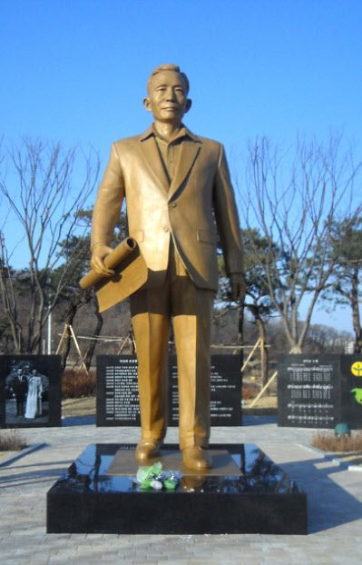

연재일 2015-07-03출처 조선일보 프리미엄조선 연재
장장 9시간 28분이나 걸린 대수술. 박태준은 곧바로 중환자실로 옮겨지고, 집도의 정경영 교수와 주치의 장준 교수가 가족들을 상담실로 불렀다.
“수술은 잘됐습니다.”
집도의가 낭보를 알렸다. 가족들은 감사의 한숨을 돌렸다. 그가 뻣뻣해진 손으로 그림을 그려가며 설명을 했다. 왼쪽 폐 전체와 흉막 전체를 적출했다, 십 년 전에 물혹을 적출한 그 자리에 다시 혹이 자라고 있었다…. ‘흉막-전폐 절제수술’은 긍정적 예측을 불러오는 쪽으로 일단락되었다.
11월 12일 새벽 1시 30분. 집에 돌아와 깜빡 눈을 붙이고 있던 비서(신형구)가 부리나케 옷을 갈아입었다. 회장님께서 찾으신다는 중환자실 간호사의 전화를 받은 것이었다. 차를 몰아 달리는 30분 동안 젊은 가슴은 내내 쿵쾅거리고 있었다. 혹시 긴급상황이 벌어진 것은 아닐까? 이 불안감과 초조감을 떨쳐낼 수 없었다. 새벽 2시, 중환자실은 괴괴했다. 밤 11시에 환자가 마취에서 깨어나고 가족면회가 이뤄진 다음이어서 창업 회장과 젊은 포스코맨, 단 둘만 마주하는 시간이었다.
“명예회장님 찾으셨습니까?” 젊은 목소리가 조금 떨렸다.
“자네 왔나? 지금 몇 신가?” 환자의 목소리가 예상보다 맑게 들려서 비서는 불안한 긴장을 조금 풀었다.
“두 시입니다.”
“낮이야, 밤이야?”
“새벽 두 시입니다.”
긴 마취와 10시간에 육박한 수술이 시간에 대한 감각을 무디게 만들었을 거라고 비서가 짐작하는 사이, 환자가 불쑥 물었다.
“유럽은 어떻게 되었나?”
비서는 깜짝 놀랐다. 죽음과 싸우고 있으면서도 세계와 국가의 문제를 먼저 떠올리는 사람! 그러나 얼른 정신부터 가다듬었다.
“그리스, 이탈리아에 이어 프랑스까지 영향이 미칠 것 같습니다.”
그리스에 이어 이탈리아로 재정위기가 번지는 상황에서 그것이 프랑스로 전염되면 신용경색에 빠진 프랑스 금융기관이 해외투자자금을 회수하면서 유럽 전역으로 위기가 전파될 수 있다는 시나리오에 대한 간략한 보고였다.
“불란스가 이태리 국채를 많이 가지고 있지. 불란스나 독일에까지 영향이 미치면 큰일이야. 두 강대국마저 흔들리면 유럽 전체가 위험해져. 우리나라도 단단히 대비를 해야 돼.”
자나 깨나 나라 걱정이란 말이 있지만, 어느덧 그 말이 내포하고 있던 어떤 울림마저 다 말라버린 시대지만, 이분은 정말 특별한 분이시구나. 당신이 처한 상황과 관계없이 자동으로 설정된 채널처럼 나라에 대한 걱정과 미래에 대한 전망이 작동되는 분이시구나. 이래서 어른이시고 큰 인물이시구나. 비서는 콧잔등이 시큼했다.

그리고 늙은 환자는 이틀 앞으로 다가온 박정희 대통령 동상 제막식에 참석하지 못하는 아쉬움을 토로했다. 인생의 막바지에 다다른 박태준, 10시간에 육박하는 대수술을 마치고 중환자실에 외로이 누운 박태준, 그의 앙상한 가슴에는 박정희에 대한 그리움이 덩어리로 엉켜 있었다. 비서는 미리 준비해둔 그날 축사라도 꺼내서 읽어드리고 싶었으나 상심만 더 자극할 것 같아서 즐거운 화제를 찾느라 바삐 머리를 굴렸다.
<②편에서 계속>